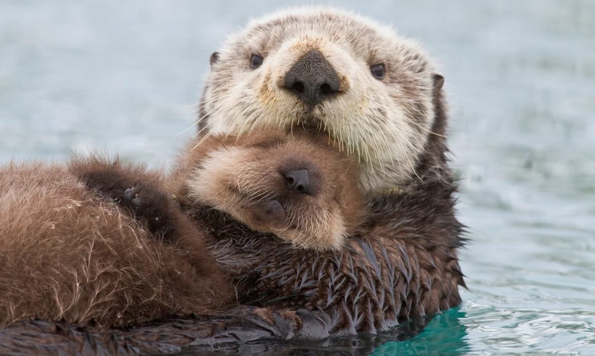

|  |
Sea otter adalah mamalia laut yang dikenal dengan kebiasaannya mengapung di air. Mereka sering terlihat memegang tangan satu sama lain untuk tetap bersama saat tidur. Otter juga menggunakan batu untuk memecahkan cangkang makanan mereka! |
| Read More |
Fakta Menarik tentang Sea Otter
| No | Fakta |
|---|---|
| 1 | Mereka memiliki bulu terpadat di dunia hewan. |
| 2 | Mereka bisa menggunakan alat seperti batu. |
| 3 | Mereka sering berenang sambil berpegangan tangan. |